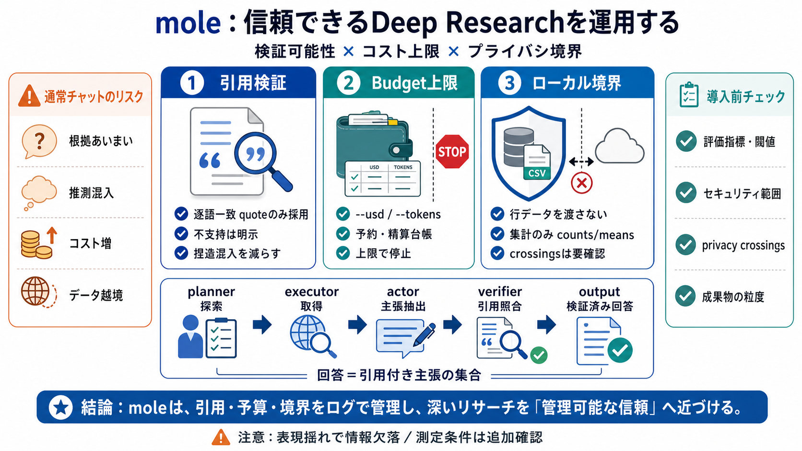

Release History
go1.25.11 (released 2026-06-02) includes security fixes to the `crypto/x509`, `mime`, and `net/textproto` packages, as w…

深いリサーチ（deep-research）を“引用の検証”と“予算の予約台帳”で管理し、ローカルデータは外へ出さない方針を掲げるAIエージェントです。
対象：README記載（要約・所見）／不足情報は明示し、導入時の確認ポイントまで整理します。 (意訳：読み物としての要点圧縮)
通常のチャット型では、もっともらしい文章が出ても、主張と引用の照合が弱くなりがちです。
moleは、最終回答を「引用付きの主張の集合」として作り、ソース本文に逐語一致する引用が無い主張は採用しません。
実行予算（--usd または --tokens）を事前に予約し、支出の台帳（ledger）制約で上限超過を起こさない設計です。
ローカルCSV/フォルダ解析は、モデルに行データを直接渡さず、SQLテンプレートと列名に基づく集計結果のみを扱う流れが説明されています。
ただし暗号化通信・ネットワーク送信・ログ保持など、実装の詳細はREADMEだけでは断定できません。
MCP対応により、コーディングエージェントがmoleをコマンドとして操作でき、toolkit modeでは役割分担が明確化されています。
つまり品質は「推論方針」＋「検証機構」の両方で決まる、という理解になります。
planner→executor→actor→verifier→output のような分業が述べられ、回答は“検証された主張グラフ”から合成される方向性です。
moleの設計思想は「引用検証」「支出上限」「ローカル境界」を同時に満たすことです。
補助的に、MCPとtoolkit modeで検証機構を統合しやすくしています。
逐語一致ベースのため堅牢性は高い一方、表現揺れがある領域では引用できず情報が欠落し得ます。
README抜粋だけでは決めきれないため、小さな予算・限定ソースで試験しつつ、以下を確認するのが安全です。
moleは「逐語一致の引用検証」「予約・精算のbudget上限」「ローカル境界（集計のみ）」で、深いリサーチを“管理可能な信頼”へ寄せる設計です。
次の一歩：小さく試して、引用の採否ログ・不支持扱い・crossings出力・session/trace/stats（あれば）を確認してください。
go1.25.11 (released 2026-06-02) includes security fixes to the `crypto/x509`, `mime`, and `net/textproto` packages, as w…
Join Tavily at one of our events. Meet the team, connect with the community, and see what we're building. /pricing plan…
New search\_depth options fast and ultra-fast (BETA) December 2025 `search_depth` parameter - New options: `fast` and …
## Error Handling ``` resp err:= client Search ctx & SearchParams Query "test" if err!= nil var apiErr APIError if erro…
You can create a release to package software, along with release notes and links to binary files, for other people to us…